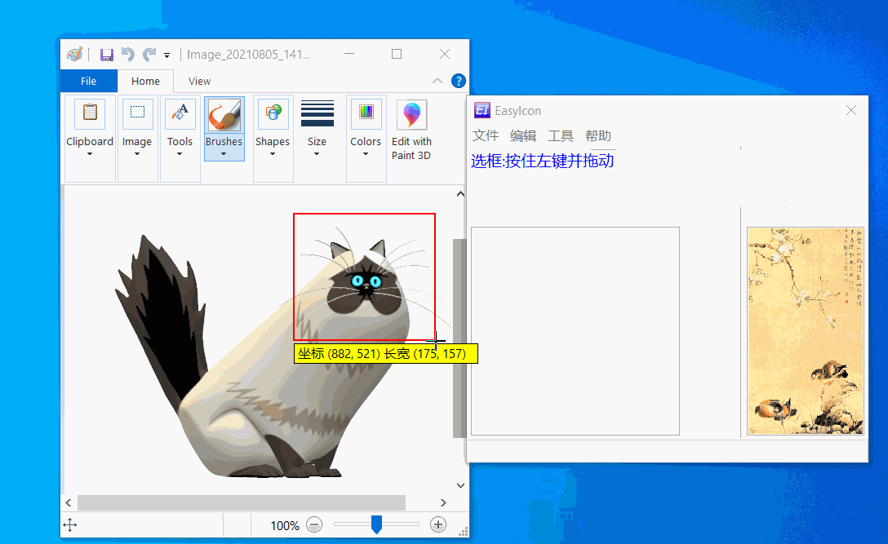
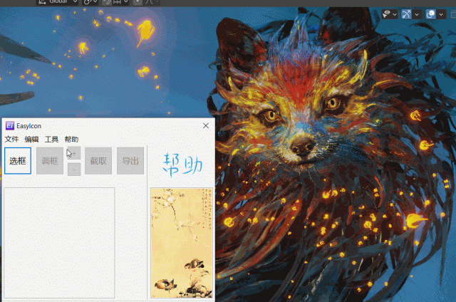
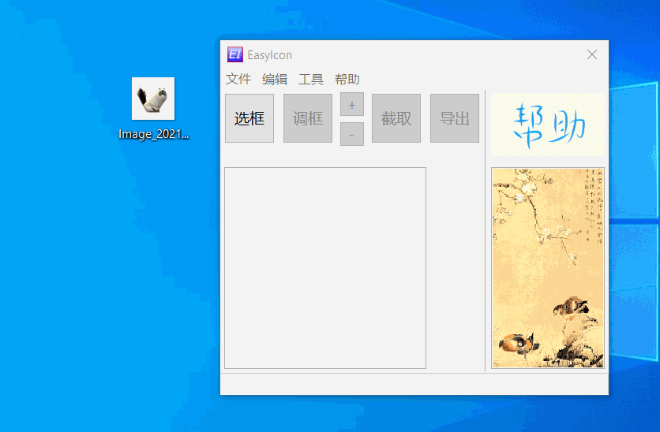
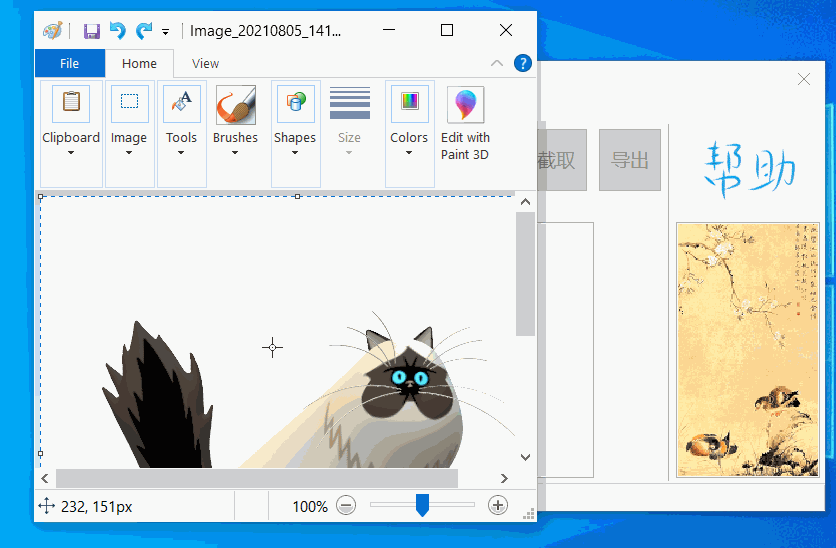

Getting started
Mode one
The normal flow, it can capture any area, good for spontaneous screenshots,
- Select (F1)
- Adjust
- Capture (F2)
- Export (F3)
Example

Mode two
Load a saved area and continue from there
If all your pictures are one size, this mode is very convenient
- the area is fixed, reopening the program restores the record

Mode three
Drag an image in, or copy it from the clipboard
When an existing picture needs quick editing or exact cropping, mode three is the one to consider
- dragging in makes an existing picture easy to edit
- copying from the clipboard makes editing and quick saving easy


Credits
- The little animals in MS Paint3D
- Blender Splash Screen, Daniel Bystedt, Splash Fox - License CC-BY-SA 3.0